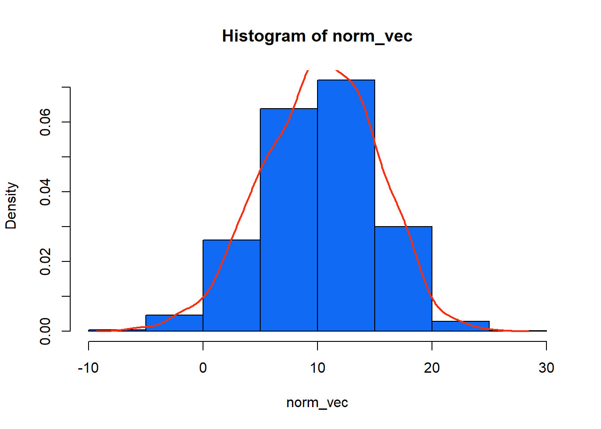

mean(airquality$Wind)[1] 9.957516mean(airquality$Ozone, na.rm = TRUE) # NA'ler kaldırılarak ortalama hesaplanır[1] 42.12931İstatistik; amacın belirlenmesi, çalışmanın planlanması, verilerin toplanması, değerlendirilmesi ve karara varılması sürecini içeren bir bilim dalıdır. İstatistik bilimi içinde örneklemden elde edilen bilgileri kitlelere genelleme, tahminler yapma, değişkenler arasındaki ilişkileri ortaya çıkarma gibi konular yer almaktadır.
Uygulamalı istatistikler iki alana ayrılabilir: tanımlayıcı istatistikler ve çıkarımsal istatistikler. Tanımlayıcı istatistikler, tabloları, grafikleri ve özet ölçüleri kullanarak verileri düzenleme, görüntüleme ve tanımlama yöntemlerinden oluşur. Buna karşılık çıkarımsal istatistikler, bir popülasyon hakkında kararlar veya tahminler yapmak için örnek sonuçlarını kullanan yöntemlerden oluşur.
Tanımlayıcı istatistik, bir dizi değeri veya bir veri kümesini özetlemeyi, tanımlamayı ve sunmayı amaçlayan bir istatistik dalıdır. Tanımlayıcı istatistikler genellikle herhangi bir istatistiksel analizin ilk adımı ve önemli bir parçasıdır. Verilerin kalitesini kontrol etmeyi sağlar ve net bir genel bakışa sahip olarak verileri anlamaya yardımcı olur. Tanımlayıcı istatistikler, merkezi eğilim ölçüleri ve dağılım ölçüleri olmak üzere ikiye ayrılır.
Dağılımın konumu hakkında bilgi veren ölçümlerdir. Aritmetik ortalama, geometrik ortalama, harmonik ortalama, düzeltilmiş ortalama, ortanca, çeyrekler, yüzdelikler konum ölçülerine örnek olarak verilebilir.
Günlük hayatta en sık kullanılan merkezi eğilim ölçüsüdür.
Üzerinde inceleme yapılan veri setindeki elemanların toplanıp incelenen eleman sayısına bölünmesiyle elde edilir.
Konum olarak verilerin en çok hangi değer etrafında toplandığının ya da yoğunlaştığının sayısal bir ölçüsüdür.
Hem kitle hem de örneklem için hesaplanır.
Dağılışların yerinin belirlenmesinde en çok kullanılan yer ölçüsü aritmetik ortalamadır; ve tek başına ortalama sözcüğünden aritmetik ortalama anlaşılır.
Aritmetik ortalama bütün değerlerin ağırlığını eşit kabul ettiğinden dağılımı her zaman en iyi şekilde temsil etmeyebilir. Ayrıca aritmetik ortalama, veri kümesindeki aşırı değerlerden çok kolay etkilenir.
\[ \mu = \frac{1}{N}\sum_{i=1}^NX_i \]
mean(airquality$Wind)[1] 9.957516mean(airquality$Ozone, na.rm = TRUE) # NA'ler kaldırılarak ortalama hesaplanır[1] 42.12931Periyodik artışlar veya azalmalar (değişim oranları) içeren enflasyon veya nüfus değişiklikleri gibi konuları incelerken, geometrik ortalama, incelenen tüm dönem boyunca ortalama değişikliği bulmak için daha uygundur.
Eğer veriler sıfır ya da negatif değerler içeriyorsa geometrik ortalama hesaplanamaz.
Geometrik ortalama, uç değerlerden aritmetik ortalamaya göre daha az etkilenmektedir.
Geometrik Ortalama <= Aritmetik Ortalama
\[ G.O. = ^n\sqrt{\prod_{i=1}^{n}X_i} \]
# R programında hazır geometrik ortalama fonksiyonu yoktur.
# 1. yol
geo_mean <- function(x){
x <- na.omit(x)
(prod(x))^(1/length(x))
}
round(geo_mean(airquality$Wind),3)[1] 9.273round(geo_mean(airquality$Ozone),3)[1] 30.524# 2. yol
library(psych)
round(geometric.mean(airquality$Wind),3)[1] 9.273round(geometric.mean(airquality$Ozone),3)[1] 30.524Gözlem değerleri küçükten büyüğe sıralandığında ortada kalan gözlem değeridir.
Bir seride yer alan gözlemlerin tümünün hesaba katılmadığı ortalamalardan biridir.
Basit serilerde seri tek sayıda gözlemden oluşuyorsa serinin gözlem değerleri küçükten büyüğe sıralandığında tam ortada yer alan gözlem değeridir.
Seri çift sayıda gözlemden oluşuyorsa ortada kalan iki gözlem değerinin aritmetik ortalaması medyandır.
Medyan, ölçümlerin %50’sinin üzerinde, %50’sinin aşağısında yer aldığı merkezi değerdir.
Dağılımdaki aşırı değerlerden etkilenmez.
Aritmetik ortalamaya kıyasla daha tutarlı bir sonuç elde edilir.
Her bir veri seti için bir tek medyan söz konusudur.
Medyanın zayıf tarafı serideki bütün değerleri dikkate almaması sebebi ile matematik işlemlere elverişli değildir.
Gözlem sayısı (n) tek ise , \(\widetilde{X} = X_{\frac{n+1}{2}}\)
Gözlem sayısı (n) çift ise , \(\widetilde{X} = \frac{X_\frac{n}{2}+X_{\frac{n+1}{2}}}{2}\)
median(airquality$Wind)[1] 9.7median(airquality$Ozone,na.rm = TRUE)[1] 31.5En sık ortaya çıkan (en yüksek frekanslı) ölçümdür.
Dağılımdaki aşırı değerlerden etkilenmez
Her dağılımda tepe değeri bulunmayabilir.
Bazı dağılımlarda birden fazla tepe değeri bulunabilir.
Tepe değeri aritmetik işlemler için elverişli değildir.
Tüm veri değerlerini göz önünde bulundurmadığı için tutarlı olmayan bir merkezi eğilim ölçüsüdür.
Gözlem sayısı az olduğunda tepe değer güvenilir bir ölçü değildir.
# R programında hazır mod fonksiyonu yoktur.
library(DescTools)
Mode(airquality$Wind)[1] 11.5
attr(,"freq")
[1] 15Mode(airquality$Solar.R,na.rm = TRUE)[1] 238 259
attr(,"freq")
[1] 4Birinci Bölen ilk yüzde 25 nci noktadır ve verinin ¼ kadarı birinci bölen içerisinde kalır.
İkinci Bölen ilk yüzde 50 nci noktadır ve verinin yarısı bu noktanın altında kalır( ½) aynı zamanda ikinci bölen medyan olarak ta bilinir.
Üçüncü Bölen ilk yüzde 75 nci veri kümesidir ve bütün verinin ¾ kadarı bu noktanın altında kalır.
Gözlem sayısı (n) tek ise , \(Q_1 = X_{\frac{n+1}{4}}\)
Gözlem sayısı (n) çift ise , \(Q_1 = \frac{X_\frac{n}{4}+X_{\frac{n}{4}+1}}{2}\)
Gözlem sayısı (n) tek ise , \(Q_3 = X_{\frac{3(n+1)}{4}}\)
Gözlem sayısı (n) çift ise , \(Q_3 = \frac{X_\frac{3n}{4}+X_{\frac{3n}{4}+1}}{2}\)
quantile(airquality$Wind,na.rm = TRUE) 0% 25% 50% 75% 100%
1.7 7.4 9.7 11.5 20.7 median(airquality$Wind,na.rm = TRUE)[1] 9.7quantile(airquality$Wind,na.rm = TRUE,probs = 0.75) #Q3 75%
11.5 quantile(airquality$Wind,na.rm = TRUE,probs = 0.25) #Q125%
7.4 quantile(airquality$Wind,na.rm = TRUE,probs = c(0.20,0.50,0.80)) # %20,%50,%80 20% 50% 80%
6.90 9.70 12.96 quantile(airquality$Solar.R,na.rm = TRUE) 0% 25% 50% 75% 100%
7.00 115.75 205.00 258.75 334.00 median(airquality$Solar.R,na.rm = TRUE)[1] 205Ortalama, medyan ve mod gibi merkezi eğilim ölçüleri, bir veri setinin dağılımının bütün resmini ortaya koymaz. Aynı ortalamaya sahip iki veri seti tamamen farklı yayılımlara sahip olabilir. Bir veri seti için gözlem değerleri arasındaki farklılık, diğer veri seti için olduğundan çok daha büyük veya daha küçük olabilir. Bu nedenle, ortalama, medyan veya mod tek başına genellikle bir veri kümesinin dağılımının şeklini ortaya çıkarmak için yeterli bir ölçü değildir. Bu yüzden veri değerleri arasındaki varyasyon hakkında bazı bilgiler sağlayabilecek bir ölçülere de ihtiyaç vardır. Bu ölçülere dağılım (yayılım) ölçüleri denir. Birlikte ele alınan merkezi eğilim ve dağılım ölçüleri, tek başına merkezi eğilim ölçülerinden ziyade bir veri setinin daha iyi bir resmini verir. Değişim aralığı, çeyrekler arası genişlik, varyans, standart sapma, basıklık, çarpıklık, min, max başlıca dağılım ölçüleri arasındadır.
Veri setindeki en büyük değer ile en küçük değer arasındaki farktır.
En basit dağılım ölçüsü olmakla birlikte uç ve aykırı değerlerden etkilenmesi olumsuz yönüdür.
Serinin sadece 2 gözlemine bağlı olarak hesaplanan bu ölçü değişkenliğin şekli hakkında çok fazla bilgi vermediğinden diğer değişkenlik ölçüleri kadar sık kullanılmaz.
\[D.A = max(X)-min(X)\]
# 1. yol
max(airquality$Ozone,na.rm = TRUE)-min(airquality$Ozone,na.rm = TRUE)[1] 167# 2. yol
range(airquality$Ozone,na.rm = TRUE)[1] 1 168range(airquality$Ozone,na.rm = TRUE)[2]-range(airquality$Ozone,na.rm = TRUE)[1][1] 167Dağılımdaki verilerin ortadaki % 50’sinin yer aldığı aralığı belirlemek için kullanılır.
Aşırı uç değerlerden etkilenmez. Çünkü çeyreklikler arası genişlik dağılımdaki değerlerin merkezdeki %50’si ile ilgilenir.
Çeyrekler arası bir genişlik, değerlerin büyük kısmının nerede olduğunu gösteren bir ölçüdür.
Çeyrek Sapma 3. çeyrek ile 1. çeyrek arasındaki farktır.
IQR (Interquartile Range) olarak ifade edilir.
\[IQR=Q_3-Q1\]
# 1.yol
q3 <- quantile(airquality$Wind,na.rm = TRUE,probs = 0.75) #Q3
q1 <- quantile(airquality$Wind,na.rm = TRUE,probs = 0.25) #Q1
q3-q175%
4.1 # 2. yol
IQR(airquality$Wind,na.rm = TRUE)[1] 4.1Gözlem değerlerinin aritmetik ortalamadan sapmaları dikkate alınarak farklı değişkenlik ölçüleri geliştirilebilir. Ancak gözlemlerin aritmetik ortalamadan sapmalarının her zaman sıfıra eşittir. Bu sorunu ortadan kaldırmak için gözlemlerin aritmetik ortalamadan olan sapmalarının karelerinin toplamının gözlem sayısına oranı değişkenlik ölçüsü olarak yorumlanabilir. Bu ölçü varyans olarak adlandırılır.
Bir dağılımda değerler aritmetik ortalamadan uzaklaştıkça dağılımın yaygınlığı artar.
Varyansın karekökü standart sapmadır. Genel olarak, bir veri kümesi için standart sapmanın daha düşük bir değeri, o veri kümesinin değerlerinin ortalama etrafında nispeten daha küçük bir aralığa yayıldığını gösterir. Buna karşılık, bir veri kümesi için standart sapmanın daha büyük bir değeri, o veri kümesinin değerlerinin, ortalama etrafında nispeten daha geniş bir aralığa yayıldığını gösterir.
Kitle varyansı \(\sigma^2\) ile standart sapma ise \(\sigma\) ile gösterilmektedir. Örneklem standart sapması ise \(s\) ile ifade edilir.
\[s= \sqrt{\sum_{i=1}^N\frac{(x_i-\bar{x})^2}{n-1}}\]
var(airquality$Wind,na.rm=TRUE)[1] 12.41154sd(airquality$Wind,na.rm=TRUE)[1] 3.523001var(airquality$Solar.R,na.rm=TRUE)[1] 8110.519sd(airquality$Solar.R,na.rm=TRUE)[1] 90.05842Farklı serilerin değişkenliklerinin karşılaştırılmasında, farklı birimlerle ölçülmüş veri setleri söz konusu olduğundan standart sapma kullanışlı değildir.
Bunun yerine ilgili serilerin standart sapmaları serilerin ortalama değerinin yüzdesi olarak ifade edilir ve gözlem değerlerinin büyüklüklerinden kaynaklanan farklılık ortadan kalkmış olur.
Elde edilen bu yeni değişkenlik ölçüsü kullanılarak serilerin birbirlerine göre daha değişken ya da daha homojen oldukları konusunda yorum yapılabilir.
Bu değer ne kadar küçükse dağılım o kadar homojendir, değişkenlik azdır. Yüzdesel olarak ifade edilir.
Değişim Katsayısı standart sapmanın aritmetik ortalamaya bölünüp 100 ile çarpılmasıyla elde edilir.
\[D.K. = \frac{S}{\bar{X}}\times{100}\]
dk_wind <- sd(airquality$Wind,na.rm=TRUE)/mean(airquality$Wind,na.rm=TRUE)
dk_wind[1] 0.3538032dk_solar <- sd(airquality$Solar.R,na.rm=TRUE)/mean(airquality$Solar.R,na.rm=TRUE)
dk_solar[1] 0.4843634Bir dağılımın normal dağılıma göre çarpık olup olmadığını belirlemede kullanılır. Simetrik dağılımlarda ortalama, ortanca ve tepe değeri birbirine eşittir.
Çarpıklık katsayısı 0 ise dağılım simetriktir, 0’dan küçük ise sola çarpıktır (negatif çarpıklık), 0’dan büyük ise sağa çarpıktır (pozitif çarpıklık).
Pozitif çarpıklıkta sağ kuyruk daha uzun iken negatif çarpıklıkta sol kuyruk daha uzundur.
Aritmetik Ortalama, Medyan ve Mod arasındaki ilişkilere göre de çarpıklık belirlenebilir.
Mod < Medyan < Ortalama ise, dağılım sağa-çarpık yani (+) yöne eğilimli dağılımdır.
Ortalama < Medyan < Mod ise, dağılım sola-çarpık yani (-) yöne eğilimli dağılımdır.
Ortalama = Mod = Medyan ise, dağılım simetrik dağılımdır.
Bir dağılımın normal dağılıma göre basık olup olmadığını belirlemede kullanılır.
Basıklık katsayısı sıfırdan büyükse normal dağılıma göre daha sivri, küçük ise daha basıktır.
Basıklık katsayısı 3’e eşit ise seri normal dağılıma (mesokurtic) sahiptir. Eğer3’ten küçük ise, bir platykurtik dağılımı gösterir (daha kısa kuyruklu normal dağılımdan daha düz). Eğer 3’ten büyük ise, bir leptokurtik dağılımı gösterir (daha uzun kuyruklu normal dağılımdan daha doruğa).
İki veya daha fazla simetrik dağılım karşılaştırıldığında aralarındaki fark basıklık ile incelenir.
library(moments)
skewness(airquality$Ozone,na.rm = TRUE) # sağa çarpık[1] 1.225681kurtosis(airquality$Ozone,na.rm = TRUE) # sivri[1] 4.184071hist(airquality$Ozone,freq = FALSE)
lines(density(airquality$Ozone,na.rm = TRUE),col = 2, lwd = 2)skewness(airquality$Solar.R,na.rm = TRUE) # sola çarpık[1] -0.4236342kurtosis(airquality$Solar.R,na.rm = TRUE) # sivri[1] 2.023567hist(airquality$Solar.R,freq = FALSE)
lines(density(airquality$Solar.R,na.rm = TRUE),col = 2, lwd = 2)# normal dağılımdan veri üretelim
norm_vec <- rnorm(1000,10,5)
skewness(norm_vec) # sola çarpık[1] 0.0120281kurtosis(norm_vec) # sivri[1] 2.987372hist(norm_vec,freq = FALSE,col="#116AF3") # renk kodları da kullanılabilir.
lines(density(norm_vec),col = "#F33011", lwd = 2)
Önceki bölümlerde, bir dağılımı tanımlayan ve özet istatistikleri hesaplayan tek bir değişkene odaklanmıştık. Tek bir değişkeni tanımlayan istatistiklere tek değişkenli istatistikler denir. İki değişken arasındaki ilişkiyi incelersek, iki değişkenli istatistiklere atıfta bulunuruz. Birkaç değişken arasındaki ilişkiler aynı anda incelenirse, çok değişkenli istatistiklere atıfta bulunuruz. İlişki ölçüleri, iki değişken arasındaki ilişkinin boyutunu özetlemek için araçlar sağlar.
İlişkiyi ölçmek için birçok araç türü olmasına rağmen, kovaryans ve Pearson korelasyon katsayıları “sayısal” veri türü için en bilinen ve yaygın araçlardır. Kovaryans ve korelasyon arasındaki temel fark, kovaryans, değerin işaretine (+’ve veya -’ve) bağlı olarak ilişkinin yönünü gösterir. Ancak korelasyon, değişkenler arasındaki “doğrusal” ilişkinin gücünü gösterir.
Kategorik veriler için ki-kare testi kullanılmkatadır. Spearman rho ve Kendall Tau korelasyon katsayıları da vardır ancak bunlar parametrik olmayan testlerdir ve yaygın olarak kullanılmazlar.
Değişkenler arasındaki ilişkiyi çizgi veya saçılım grafiği çizerek de incelenebilir. Ancak, bu grafiklere bakarak ilişkiden emin olmak her zaman mümkün olmayabilir. İstatistikte testler her zaman görsel araçlardan daha güçlüdür. Görsel araçlar fikir verir, testler ise fikirleri doğrular.
Kovaryans, iki değişkenin ortak değişkenliğinin bir ölçüsüdür. Kovaryans (−∞,∞) aralığında herhangi bir değer alabilir. Bir değişkenin büyük/küçük değerleri esas olarak diğer değişkenin daha büyük/küçük değerlerine karşılık geliyorsa kovaryans pozitiftir. Değişkenler zıt davranış gösterme eğilimindeyse kovaryans negatiftir. Kovaryans \(s_{xy}\) ile gösterilir ve aşağıdaki şekilde hesaplanır.
\[{s}_{xy} = \frac{\sum_{i=1}^n(x_i - \bar{x})(y_i - \bar{y})}{n-1}\]
head(iris) Sepal.Length Sepal.Width Petal.Length Petal.Width Species
1 5.1 3.5 1.4 0.2 setosa
2 4.9 3.0 1.4 0.2 setosa
3 4.7 3.2 1.3 0.2 setosa
4 4.6 3.1 1.5 0.2 setosa
5 5.0 3.6 1.4 0.2 setosa
6 5.4 3.9 1.7 0.4 setosacov(iris$Sepal.Length,iris$Petal.Length) # pozitif ilişki var[1] 1.274315cov(iris$Sepal.Length,iris$Sepal.Length)[1] 0.6856935Korelasyon, nicel değişkenler arasındaki ilişkiyi incelemek için yaygın olarak kullanılan bir yöntemdir. Karl Pearson’ın Pearson moment korelasyon katsayısı olarak da bilinen doğrusal korelasyon katsayısı r’dir. Doğrusal korelasyon katsayısı, iki değişken arasındaki doğrusal ilişkinin gücünü ölçer.

Korelasyon, kovaryansın standartlaştırılmış halidir.
Standartlaştırmadan kaynaklanan bilgi kaybı vardır.
Standartlaştırılmış olduğu için korelasyonun birimi yoktur, birimsizdir.
Korelasyon -1 ve +1 arasında değer alır.
Korelasyon , ±1’e yakınsa, iki değişken yüksek oranda ilişkilidir ve bir saçılım grafiği üzerinde çizilirse, veri noktaları bir çizgi etrafında kümelenir.
Korelasyon , ±1’den uzaksa, veri noktaları daha geniş bir alana dağılır.
Korelasyon 0’a yakınsa, veri noktaları esasen yatay bir çizgi etrafında dağılır ve bu, değişkenler arasında neredeyse hiçbir doğrusal ilişki olmadığını gösterir.
r=1 ise değişkenler arasında pozitif yönlü tam bir doğrusal ilişki vardır.
r=-1 ise değişkenler arasında negatif (ters) yönlü tam bir doğrusal ilişki vardır.
r=0 ise değişkenler arasında doğrusal ilişki yoktur.
Korelasyon nedensel ilişki değildir.
Korelasyon değişkenler arasındaki sebep sonuç ilişkilerini açıklamaz.
Korelasyon matematiksel ilişkidir.
\[ r=\frac{\sum_{i=1}^n(x_i - \bar{x})(y_i - \bar{y})}{\sqrt{\sum_{i=1}^n(x_i-\bar{x})^2}\sqrt{\sum_{i=1}^n(y_i-\bar{y})^2}} = \frac{s_{xy}}{s_xs_y} \]
İki değişken arasındaki doğrusal ilişkinin miktarı için açık bir sınıflandırma kuralı yoktur. Bununla birlikte, aşağıdaki tablo, Pearson çarpım momenti korelasyon katsayısının sayısal değerlerinin nasıl ele alınacağı konusunda temel bir fikir verebilir.
| Korelasyon Katsayısı (r) | İlişkinin Derecesi |
|---|---|
| \(r > 0.90\) | Çok kuvvetli |
| \(0.70 < r\le 0.90\) | Kuvvetli |
| \(0.50 < r\le 0.70\) | Orta |
| \(0.30 < r\le 0.50\) | Düşük |
| \(r < 0.30\) | Zayıf |
cor(iris$Sepal.Length,iris$Petal.Length) # kuvvetli ilişki vardır.[1] 0.8717538plot(iris$Sepal.Length,iris$Petal.Length,
col="blue",
xlab = "Sepal",
ylab = "Petal",
main = "Sepal vs Petal Saçılım Grafiği")Kontenjans katsayısı C, kategorik veriler için \(\chi 2\) tabanlı bir ilişki ölçüsüdür. Bağımsızlık için \(\chi 2\) testine dayanır. \(\chi 2\) istatistiği, kontenjans durum tablolarındaki (iki yönlü tablo, çapraz tablo tablosu veya çapraz tablolar olarak da bilinir) değişkenler arasında istatistiksel bir ilişki olup olmadığını değerlendirmeyi sağlar. Bu tür tablolarda değişkenlerin dağılımı matris formatında gösterilir. İki nominal (kategorik) değişken arasında anlamlı bir ilişki olup olmadığını belirlemek için kullanılır.
\[ \chi 2=\sum\frac{(G-B)^2}{B} \]
Burada G gözlemlenen frekansı ve B ise beklenen frekansı temsil eder . Ki-kare test istatistiği ile iki kategorik değişken arasında ilişki olup olmadığı araştırılır. Hipotez aşağıdaki gibi kurulur:
\(H_0:\) Değişkenler arasında ilişki yoktur.
\(H_1:\) Değişkenler arasında ilişki vardır.
Kontenjans katsayısı ise şu şekilde elde edilir:
\[ C=\sqrt{\frac{\chi2}{n+\chi2}} \]
Burada n satır ve sütun toplamlarını ifade eder. C katsayısı 0 ile 1 arasında bir değer alır. C=0 olması iki değişken arasında ilişki olmadığına, C=1 olması ile tam ilişkili olduğu anlamına gelir.
# öğrencilerin sigara içme alışkanlığının egzersiz düzeyi ile ilişkili
# olup olmadığını inceleyelim.
library(MASS)
head(survey) Sex Wr.Hnd NW.Hnd W.Hnd Fold Pulse Clap Exer Smoke Height M.I
1 Female 18.5 18.0 Right R on L 92 Left Some Never 173.00 Metric
2 Male 19.5 20.5 Left R on L 104 Left None Regul 177.80 Imperial
3 Male 18.0 13.3 Right L on R 87 Neither None Occas NA <NA>
4 Male 18.8 18.9 Right R on L NA Neither None Never 160.00 Metric
5 Male 20.0 20.0 Right Neither 35 Right Some Never 165.00 Metric
6 Female 18.0 17.7 Right L on R 64 Right Some Never 172.72 Imperial
Age
1 18.250
2 17.583
3 16.917
4 20.333
5 23.667
6 21.000nrow(survey)[1] 237tbl <- table(survey$Smoke, survey$Exer)
tbl
Freq None Some
Heavy 7 1 3
Never 87 18 84
Occas 12 3 4
Regul 9 1 7# 1.yol
chisq.test(tbl) Warning in chisq.test(tbl): Chi-squared approximation may be incorrect
Pearson's Chi-squared test
data: tbl
X-squared = 5.4885, df = 6, p-value = 0.4828# 0.4828 p değeri .05 anlamlılık düzeyinden büyük olduğu için sigara
# içme alışkanlığının öğrencilerin egzersiz düzeyinden bağımsız olduğu
# sıfır hipotezini reddedemeyiz.
# 2.yol
summary(tbl)Number of cases in table: 236
Number of factors: 2
Test for independence of all factors:
Chisq = 5.489, df = 6, p-value = 0.4828
Chi-squared approximation may be incorrect